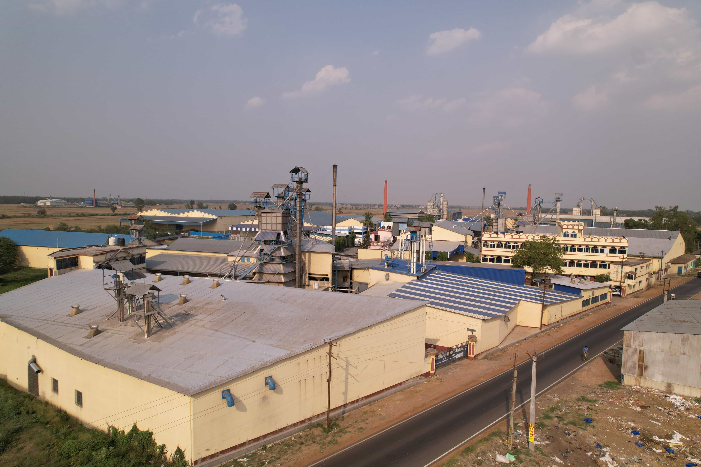
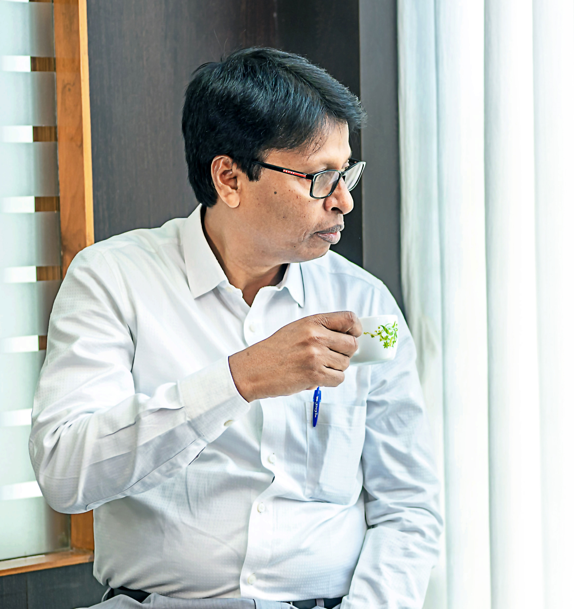
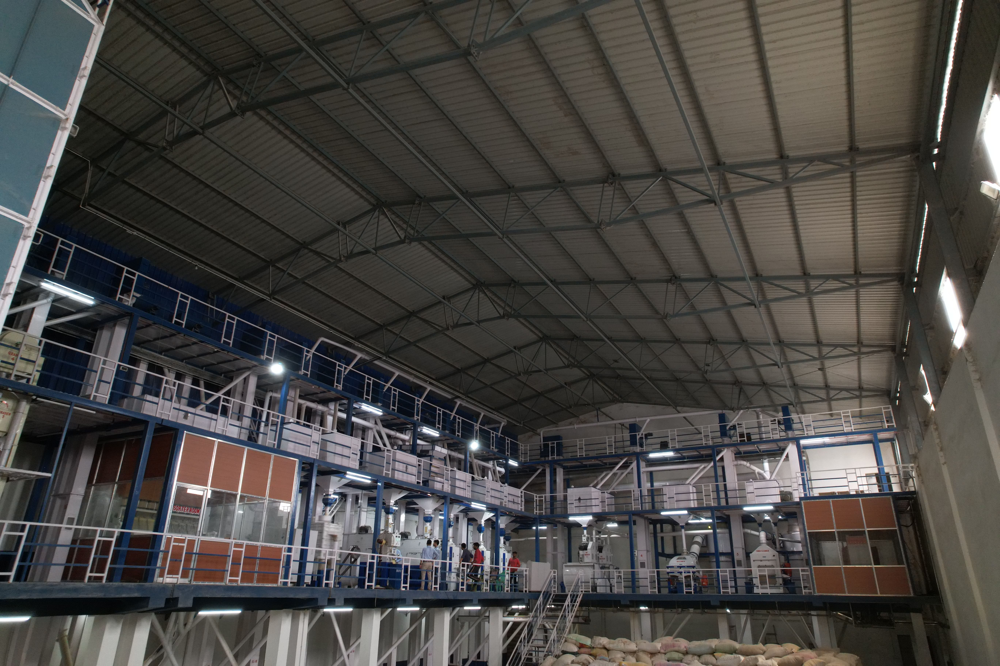
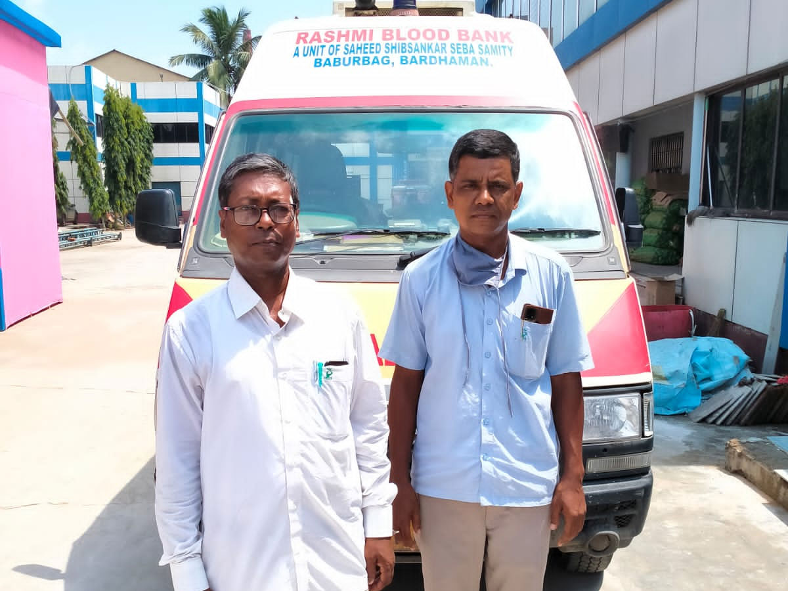
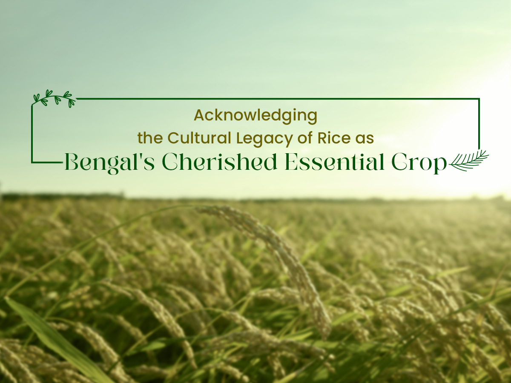

The BAPPL world
People, process, place.
Our gallery is a glimpse of the work behind every pack — from mill floor to final dispatch.





Want to see more?
A visual walk through our people, facilities and the places where good rice begins.
Our gallery is a glimpse of the work behind every pack — from mill floor to final dispatch.




